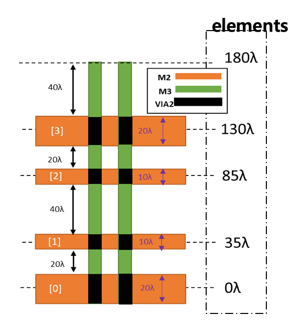
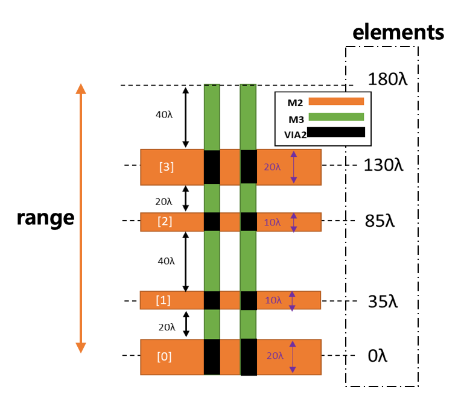

OneDimGrid class#
- class laygo2.object.grid.OneDimGrid(name, scope, elements=array([0]))[source]#
Bases:
CircularMappingClass implementing one-dimensional abstract coordinates.
Notes
Reference in Korean: 1차원 추상좌표를 구현하는 클래스.
Public Data Attributes:
Coordinate system name.
Region in which the coordinate system is defined Coordinates in the defined region are repeatedly expanded.
Object that converts physical coordinates into abstract coordinates.
Object that converts abstract coordinates into physical coordinates.
The size of the region in which the coordinate system is defined.
Inherited from
CircularMappingget the elements.
Shape of circular mapping.
Public Methods:
__init__(name, scope[, elements])Constructor function of OneDimGrid class.
__getitem__(pos)Return the physical coordinate corresponding to the abstract coordinate pos.
__eq__(other)Return the abstract grid coordinate that matches to other.
__lt__(other)Return the abstract grid coordinate that is the largest but less than other.
__le__(other)Return the index of the grid coordinate that is the largest but less than or equal to other.
__gt__(other)Return the abstract grid coordinate that is the smallest but greater than other.
__ge__(other)Return the index of the grid coordinate that is the smallest but greater than or equal to other.
__str__()Return the string representation of the object.
Return the summary of the object information.
Return dict object containing grid information.
Inherited from
CircularMappingnumpy.ndarray: get the elements.
set_elements(value)numpy.ndarray: set the elements.
__init__(name, scope[, elements])Constructor function of OneDimGrid class.
__getitem__(pos)Return the physical coordinate corresponding to the abstract coordinate pos.
__iter__()Iteration function of circular mapping.
__next__()Next element access function of circular mapping.
__str__()Return the string representation of the object.
Return the summary of the object information.
- __init__(name, scope, elements=array([0]))[source]#
Constructor function of OneDimGrid class.
- Parameters
name (str) –
scope (numpy.ndarray) – scope of one-dimensional coordinate system
elements (numpy.ndarray) – members of one-dimensional coordinate system
- Return type
laygo2.OneDimGrid
Examples
>>> g1_x = OneDimGrid(name='xgrid', scope=[0, 180], elements=[0, 35, 85, 130, 50]) >>> print(g1_x) OneDimGrid object name: xgrid, class: OneDimGrid, scope: [0, 180], elements: [0, 35, 85, 130 50]

Notes
Reference in Korean: OneDimGrid 클래스의 생성자함수. 파라미터 name(str): 이름 scope(numpy.ndarray): 1차원 좌표계의 범위 elements(numpy.ndarray): 1차원 좌표계 의 구성원 반환값 laygo2.OneDimGrid 참조 없음
- export_to_dict()[source]#
Return dict object containing grid information.
- Parameters
None –
- Return type
Examples
>>> g1_x = OneDimGrid(name='xgrid', scope=[0, 180], elements=[0, 35, 85, 130, 50]) >>> g1_x.export_to_dict() {'scope': [0, 180], 'elements': [0, 35, 85, 130, 50]}
Notes
Reference in Korean: 그리드의 정보를 담은 dict객체 반환. 파라미터 없음 반환값 dict 참조 없음
- get_elements()#
numpy.ndarray: get the elements.
- set_elements(value)#
numpy.ndarray: set the elements.
- _elements = None#
Array consisting of the elements of circular mapping.
Examples
>>> elements = [ 0, 35, 85, 130, 180 ] >>> cm = CircularMapping( elements = elements ) >>> cm.elements [ 0, 35, 85, 130, 180 ]
Notes
Reference in Korean: 순환 맵핑의 구성 요소로 이루어진 배열.
- Type
- abs2phy = None#
Object that converts abstract coordinates into physical coordinates.
Examples
>>> g1_x = OneDimGrid(name='xgrid', scope=[0, 180], elements=[0, 35, 85, 130, 50]) >>> g1_x.abs2phy <_AbsToPhyGridConverter object>
Notes
Reference in Korean: 추상 좌표에서 물리 좌표로 변환연산을 해주는 객체.
- Type
self.abs2phy (laygo2._AbsToPhyGridConverter)
- property elements#
get the elements.
- Type
- name = None#
Coordinate system name.
Examples
>>> g1_x = OneDimGrid(name='xgrid', scope=[0, 180], elements=[0, 35, 85, 130, 50]) >>> g1_x.name “xgrid”
Notes
Reference in Korean: 좌표계 이름.
- Type
- phy2abs = None#
Object that converts physical coordinates into abstract coordinates.
Examples
>>> g1_x = OneDimGrid(name='xgrid', scope=[0, 180], elements=[0, 35, 85, 130, 50]) >>> g1_x.phy2abs <_PhyToAbsGridConverter object>
Notes
Reference in Korean: 물리 좌표에서 추상 좌표로 변환연산을 해주는 객체.
- Type
self.phy2abs (laygo2._PhyToAbsGridConverter)
- range = None#
Region in which the coordinate system is defined Coordinates in the defined region are repeatedly expanded.
Examples
>>> g1_x = OneDimGrid(name='xgrid', scope=[0, 180], elements=[0, 35, 85, 130, 50]) >>> g1_x.range [0, 180]
Notes
Reference in Korean: 좌표계가 정의된 영역. 정의된 영역의 좌표들이 반복되는 형태로 확장된다.
- Type
- property shape#
Shape of circular mapping.
Examples
>>> elements = [ 0, 35, 85, 130, 180 ] >>> cm = CircularMapping( elements = elements ) >>> cm.shape [4]
Notes
Reference in Korean: 순환 맵핑의 shape.
- Type
{kind=link}
{kind=link}
{kind=link}
{kind=link}
{kind=link}
{kind=link}